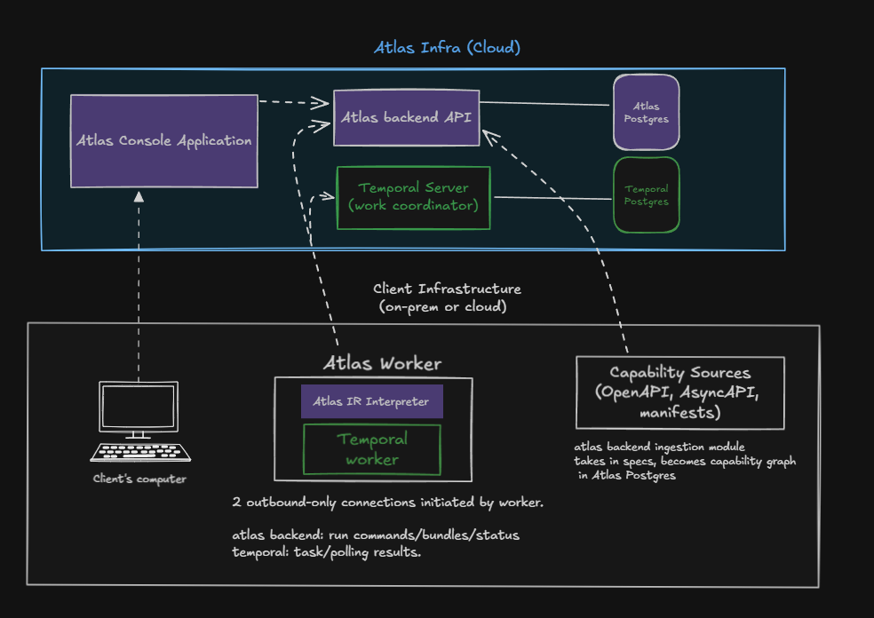

Atlas · Lesson 2 · 4 min
Atlas has four apps. Two manage the product. Two run integrations against test or customer systems.
| App | Job | Main tools |
|---|---|---|
console | The website people use. | React, TypeScript, Vite |
backend | Stores data, checks permissions, builds workflows, and sends work to workers. | Node, Hono, PostgreSQL |
worker | Runs approved workflows and calls APIs. It holds the credentials. | Node, Temporal |
mock-services | Provides local versions of the APIs used in demos and tests. | Node, Hono, Zod |
The local Compose topology runs separate Development and Production Workers. Normal pnpm infra:up startup preserves a canonical stack. During the one-time Production-like rename transition, it may instead remove a detected retired Atlas stack's disposable PostgreSQL, Temporal, and Worker-secret state and recreate both environments; unrelated Docker resources remain outside that boundary.
flowchart LR
Person["Person"] --> Console["Console"]
Console --> Backend["Backend"]
Backend --> Database[("PostgreSQL")]
Backend --> Sources["Connected API specifications and demo applications"]
Worker["Worker"] --> Backend
Worker --> Temporal["Temporal"]
Worker --> APIs["Customer and provider APIs"]

| You | Atlas |
|---|---|
| Browse a page | The Console asks the Backend for saved data. |
| Connect an API | The Backend reads its specification and saves the actions Atlas can use. |
| Create a workflow | The Backend asks the model for a draft, compiles the editable YAML into typed data, and checks every capability and mapping. The Worker is not involved. |
| Test and approve | The Backend binds sandbox evidence and Admin approval to the exact plan, then produces a signed .atlas bundle. |
| Start a run | The Worker verifies the bundle and grant, decrypts the input, and gives the approved plan to the generic Temporal interpreter. |
| Handle a failure | The Backend offers safe options. The Worker continues the same run. |
Credentials and unencrypted customer data stay with the Worker. Temporal history is encrypted and the Backend receives status updates with sensitive values removed. The AI model cannot reach the Worker, credentials, provider network, or running interpreter.
See the setup guide, technical documentation, and application source.